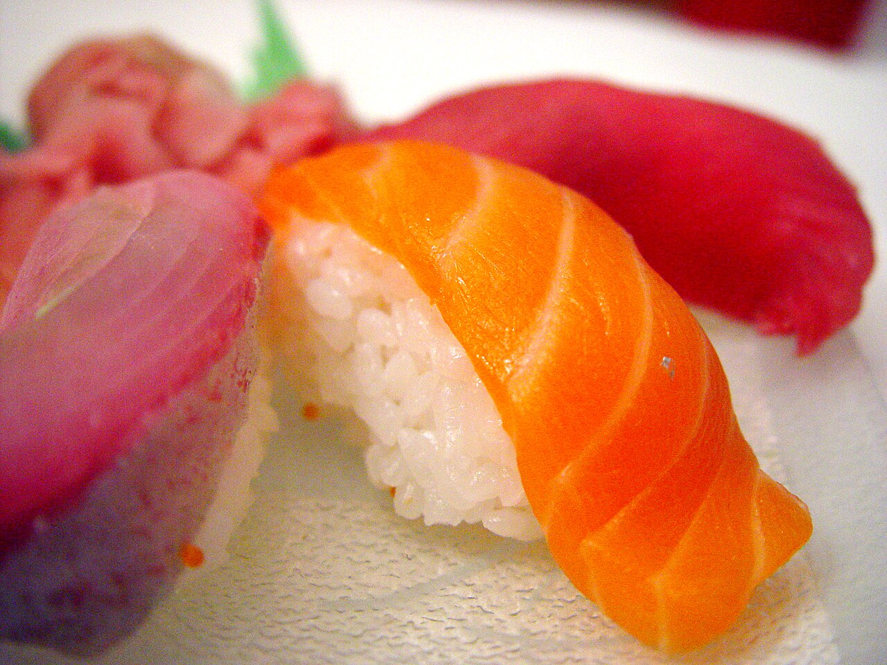
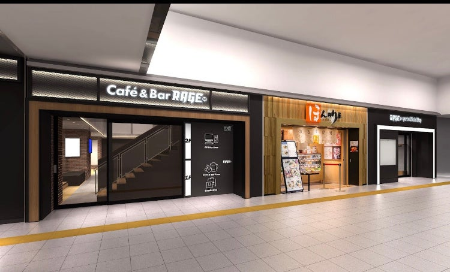

Sunshine City Alpa 2F
Japan's largest Pokémon Center — limited Mega Tokyo goods, a Charizard statue for photos and the Pikachu Sweets takeout counter. The Mugiwara Store, the official One Piece shop, sits on the same floor.



Two guests — a first taste of otaku Ikebukuro, with a local guide shaping the evening around what they like.
Tuesday, March 23, in the evening. About 3 hours including dinner — the start time is flexible.

In front of Café&Bar RAGE ST at Ikebukuro Station East Exit — up the stairs by the Ikefukuro owl statue. Tap the photo or the name for Google Maps. Hotel pickup is also possible — just tell us where you are staying.
Shopping first, around Sunshine City — then conveyor-belt sushi for dinner, and we finish back at Ikebukuro Station. No alcohol stops, so younger guests are fine.
One way the 3 hours can run — sample start 17:00. The start can shift, and the stops flex to what the guests want on the day.
In front of Café&Bar RAGE ST at Ikebukuro Station East Exit — or at your hotel, if pickup is easier.
Into Sunshine City: Japan's largest Pokémon Center, with the One Piece store on the same floor.
3,000+ capsule-toy machines — everyone finds something.
The nine-floor flagship for manga, figures and limited goods.
Conveyor-belt sushi to close the evening, about an hour at the table.
Back to Ikebukuro Station — trains to anywhere in Tokyo from here.
The flagships sit minutes apart in and around Sunshine City — big stores, no maze. This is the sample set; stops can be swapped for whatever the guests are into.
Sunshine City Alpa 2F
Japan's largest Pokémon Center — limited Mega Tokyo goods, a Charizard statue for photos and the Pikachu Sweets takeout counter. The Mugiwara Store, the official One Piece shop, sits on the same floor.
Sunshine City Alpa 2F
The official One Piece store, a few steps from the Pokémon Center. Store-only goods and a Thousand Sunny photo spot — an easy win for One Piece fans.
Sunshine City, World Import Mart 3F
Over 3,000 capsule-toy machines in one hall — billed as the largest gashapon store in the world. The Bandai Namco Cross Store on the same floor covers the One Piece Card Game and Tamashii Nations figures.
2 min from Sunshine City
Nine floors — one of the biggest anime shops in Japan, and Animate's flagship. New manga, figures, CDs and limited goods, plus event spaces upstairs: the department-store version of Akihabara.
We sit down for sushi inside the same 3 hours — no rushing the shopping to fit it in.
Sunshine 60 Street, by Sunshine City
Dinner at a conveyor-belt sushi restaurant: order on a touch panel — English menu available — and the plates ride the belt to your table. Every five plates earns a spin of the Bikkura Pon capsule game. Easy, fun and very Japanese; no alcohol needed to enjoy it.

Yuuki Ichihara
“Anime Sensei” — anime & game tour guide, Tokyo
I guide anime fans around Akihabara and Ikebukuro — the shops, the arcades, the places only locals queue for. Ikebukuro is my second home turf: bring me a group that loves anime, games or Pokémon, and I will shape the evening around what they like.
★4.96 · 171 reviews on Airbnb
Photos via Wikimedia Commons: Pokémon Center Mega Tokyo entrance (Maplestrip, CC BY 3.0); Sunshine City atrium (CC BY 2.0); gashapon machines (CC BY-SA 3.0); Animate Ikebukuro (CC BY-SA 2.0); salmon nigiri sushi (Think Draw, CC BY 2.0). Meeting point photo: Café&Bar RAGE ST storefront, from the JR East Cross Station press release (PR Times). Opening hours checked against official sites in November 2026 and can change. This is a sample plan for two guests — the final stops and timing are adjusted to the guests' interests on the day.
Guide: Yuuki Ichihara · Anime Sensei Tours · Akihabara & Ikebukuro, Tokyo